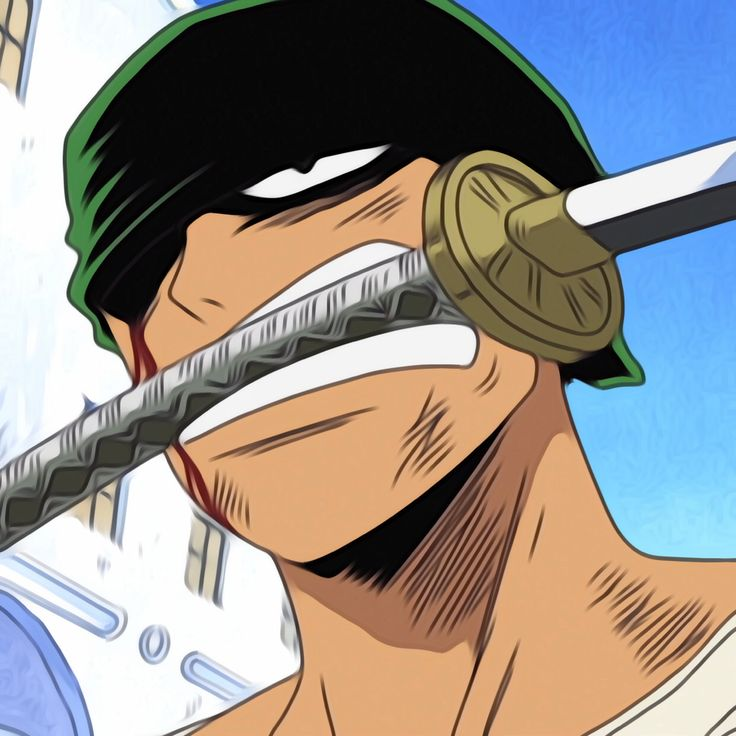
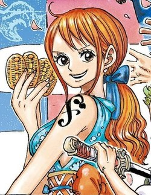
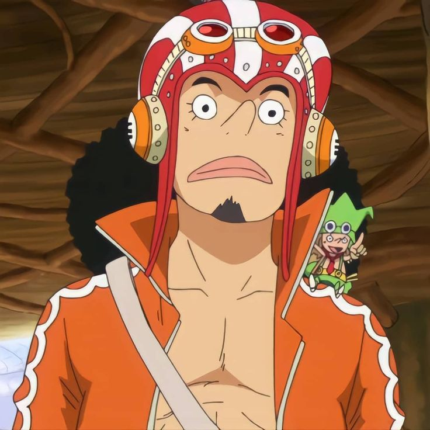
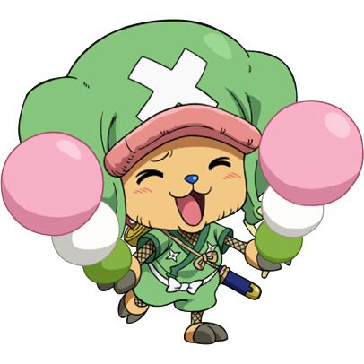
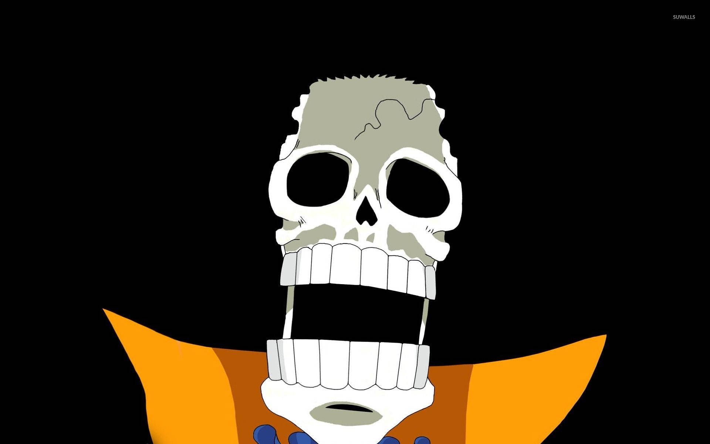
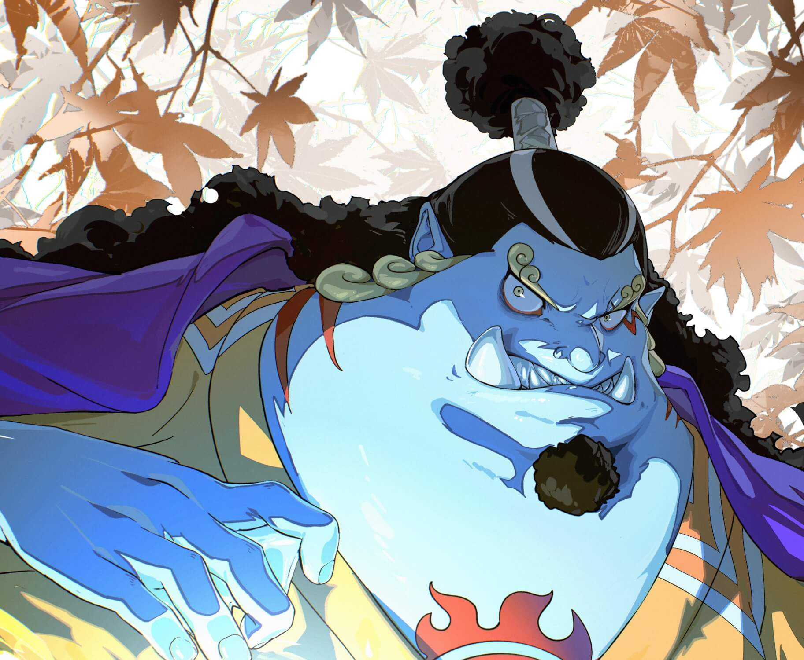

القصة الكاملة لوون بيس
تدور أحداث ون بيس حول مونكي دي لوفي، شاب يحلم بأن يصبح ملك القراصنة بعد أن ألهمه قرصان القبعة الحمراء شانكس. بعد تناول لوفي لفاكهة الشيطان (غومو غومو نو مي)، يصبح جسمه مطاطياً لكنه يفقد القدرة على السباحة.
يبدأ لوفي رحلته بتشكيل طاقمه الخاص "قراصنة قبعة القش" بحثاً عن الكنز الأسطوري "ون بيس" الذي خلفه ملك القراصنة السابق غول دي روجر قبل إعدامه. خلال الرحلة، يواجه لوفي وأصدقاؤه العديد من الأعداء الأقوياء ويتعرفون على أسرار العالم.
المواضيع الرئيسية
تتناول القصة مواضيع عميقة مثل:
- الحرية والسعي وراء الأحلام
- الصداقة والولاء
- الظلم والفساد في العالم
- التراث التاريخي والفجوة بين الماضي والحاضر
- معنى أن تكون عائلة
العالم في ون بيس
عالم ون بيس يتكون من:
- البحر الأزرق الكبير: مقسم إلى أربعة أجزاء (شمال، جنوب، شرق، غرب)
- جراند لاين: بحر خطير حيث توجد معظم الأحداث
- ريد لاين: سلسلة جبال ضخمة تقسم العالم
- ماريجوا: مقر حكومة العالم
- إمبل داون: أخطر سجن في العالم
الشخصيات الرئيسية
تعرف على أبرز شخصيات أنمي ون بيس

مونكي دي لوفي
قائد الطاقم
القدرة: فاكهة غومو غومو نو مي
الانتماء: قراصنة قبعة القش
السمات: مرح، شجاع، غبي أحياناً
بطل القصة الرئيسي الذي يحلم بأن يصبح ملك القراصنة. يمتلك جسم مطاطي بسبب فاكهة الشيطان ويشتهر بصراخه "سأكون ملك القراصنة!".

رورونوا زورو
مبارز السيف
القدرة: تقنية السنتوري
الانتماء: قراصنة قبعة القش
السمات: جاد، قوي الإرادة، سيء في الاتجاهات
أول عضو ينضم إلى لوفي، يسعى ليكون أقوى سياف في العالم. يستخدم أسلوب السيف الثلاثي ويتحمل الألم بصبر شديد.

نامي
ملاحة السفينة
القدرة: قراءة الخرائط والطقس
الانتماء: قراصنة قبعة القش
السمات: ذكية، تحب المال، سريعة الغضب
ملاحة السفينة الماهرة التي تحلم برسم خريطة العالم كله. تعرف بذكائها وقدرتها على التنبؤ بالطقس باستخدام عصاها الخاصة.

يوسوب
قناص السفينة
القدرة: القنص الدقيق
الانتماء: قراصنة قبعة القش
السمات: جبان، مخترع، يحكي القصص
قناص الطاقم الذي يحلم بأن يصبح محارباً شجاعاً مثل أبيه. معروف بكذبه الدائم وقدرته على الاختراع.

سانجي
طباخ السفينة
القدرة: تقنية القدم السوداء
الانتماء: قراصنة قبعة القش
السمات: أنيق، عاشق للنساء، مخلص لمطبخه
طباخ السفينة الماهر الذي يستخدم قدميه فقط في القتال. يحلم بإيجاد "أل بلو" البحر الأسطوري الذي يجمع كل بحار العالم.

توني توني تشوبر
طبيب السفينة
القدرة: فاكهة هيتو هيتو نو مي
الانتماء: قراصنة قبعة القش
السمات: لطيف، سريع التأثر، يحب الحلوى
رنة آكلة فاكهة الشيطان مكنتها من التحول إلى إنسان. انضم إلى الطاقم كطبيب وهو برفقة د. هيلولوك.

نيكو روبين
عالمة الآثار
القدرة: فاكهة هانا هانا نو مي
الانتماء: قراصنة قبعة القش
السمات: غامضة، ذكية، تحب التاريخ
آخر ناجية من جزيرة أوهارا، انضمت إلى الطاقم بعد أحداث ألاباستا. تحلم باكتشاف حقيقة بونيغليف والقرن الضائع.

فرانكي
نجار السفينة
القدرة: جسم سيبراني
الانتماء: قراصنة قبعة القش
السمات: صاخب، عاشق للكولا، ماهر في الهندسة
نجار السفن الماهر الذي صمم وصنع سفينة الطاقم الجديدة "سنشي غو". نصف جسمه آلي بعد حادث قطار.

بروك
موسيقي السفينة
القدرة: فاكهة يومي يومي نو مي
الانتماء: قراصنة قبعة القش
السمات: مرح، عاشق للحليب، هيكل عظمي
عازف الكمان في الطاقم وهو هيكل عظمي يعود إلى الحياة بفعل فاكهة الشيطان. يحلم بلقاء لابون الحوت مرة أخرى.

جينبي
ملاح السفينة
القدرة: تقنية السمكة-الإنسان
الانتماء: قراصنة قبعة القش
السمات: حكيم، قوي، مخلص
قرصان سمكة-إنسان وقائد سابق لقراصنة الشمس. انضم رسمياً للطاقم بعد أحداث حرب القمة. خبير في الكاراتيه المائي.
أركات القصة
المراحل الرئيسية لتطور القصة في أنمي ون بيس
أركة الشرق الأزرق
الحلقات 1-61
بداية القصة مع لوفي وتكوينه لطاقمه الأول (زورو، نامي، يوسوب، سانجي). مغامرات في جزر سيريكس، أورانج تاون، ساوبوندي، وباراتي.
أركة ألاباستا
الحلقات 62-135
مواجهة مع باروك ووركس وقراصنة الباجي في مملكة ألاباستا. انضمام تشوبر للطاقم ومواجهة كروكودايل.
أركة سكايبيا
الحلقات 136-206
الصعود إلى جزيرة السماء سكايبيا ومواجهة إينيل وكهنة السماء. اكتشاف بونيغليف والصراع من أجل جرس الذهب.
أركة ووتر 7 وإنيس لوبي
الحلقات 207-325
زيارة مدينة السفن ووتر 7 ومواجهة CP9. إنقاذ روبين وفرانكي من حكومة العالم. بناء السفينة الجديدة "سنشي غو".
أركة ثريلر بارك
الحلقات 326-384
المغامرة في جزيرة الأشباح ومواجهة جيك موريا وطاقمه. انضمام بروك للطاقم واكتشاف ظل دراكولا.
أركة حرب القمة
الحلقات 385-516
إنقاذ آس من إمبل داون وحرب مارينفورد ضد البحرية. موت آس واكتشاف رسالة غول دي روجر.
أركة جزيرة السمكة-الإنسان
الحلقات 517-574
المغامرة تحت الماء ومواجهة هودي جونز. انضمام جينبي للطاقم واكتشاف كنز جزيرة السمكة-الإنسان.
أركة دريسروزا
الحلقات 575-746
التحالف مع ترافالغار لو ومواجهة دوفلامنغو. تحرير مملكة دريسروزا وكشف أسرار سميلي.
أركة كعكة الزفاف
الحلقات 747-889
إنقاذ سانجي من عائلة فينسموك ومواجهة بيغ موم. هروب من توت لاند واكتشاف خريطة رود بونيغليف.
أركة وانو
الحلقات 890-1085
التحالف مع كيدو ومواجهة كايدو في وانو. تحرير وانو من حكم كايدو واكتشاف أسرار بونيغليف.
طريقة مشاهدة الأنمي
روابط مباشرة لمشاهدة أنمي ون بيس على المنصات المختلفة
ترتيب المشاهدة الموصى به:
- أركة الشرق الأزرق (ح1-61)
- أركة ألاباستا (ح62-135)
- أركة سكايبيا (ح136-206)
- أركة ووتر 7 وإنيس لوبي (ح207-325)
- أركة ثريلر بارك (ح326-384)
- أركة حرب القمة (ح385-516)
- أركة جزيرة السمكة-الإنسان (ح517-574)
- أركة دريسروزا (ح575-746)
- أركة كعكة الزفاف (ح747-889)
- أركة وانو (ح890-1085+)
الأفلام المهمة:
- ون بيس: الفيلم الذهبي (2000)
- بارون أوماتسوري والجزيرة السرية (2005)
- ون بيس فيلم: سترونج وورلد (2009)
- ون بيس فيلم: Z (2012)
- ون بيس فيلم: جولد (2016)
- ون بيس فيلم: ستامبيد (2019)
- ون بيس فيلم: ريد (2022)
أحداث خاصة في ون بيس
أهم الأحداث والحلقات الخاصة في أنمي ون بيس

حرب مارينفورد
أعظم حرب في تاريخ ون بيس بين البحرية وقراصنة اللحية البيضاء

كشف الترس الخامس
ظهور أقصى قوة للوفي ضد كايدو في وانو

إعدام غول دي روجر
الحدث الذي أشعل عصر القراصنة الكبير

ظهور سنشي غو
السفينة الجديدة لقراصنة قبعة القش

وداع جوينغ ميري
أحد أكثر المشاهد تأثيراً في الأنمي

"لا شيء حدث!"
تضحية زورو في ثريلر بارك

وداع سانجي
مشهد الوداع المؤثر بين سانجي وزييف

"أريد أن أعيش!"
صراخ روبين المؤثر في إنيس لوبي